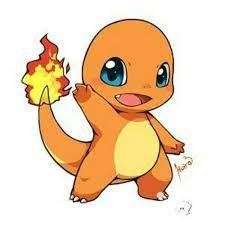
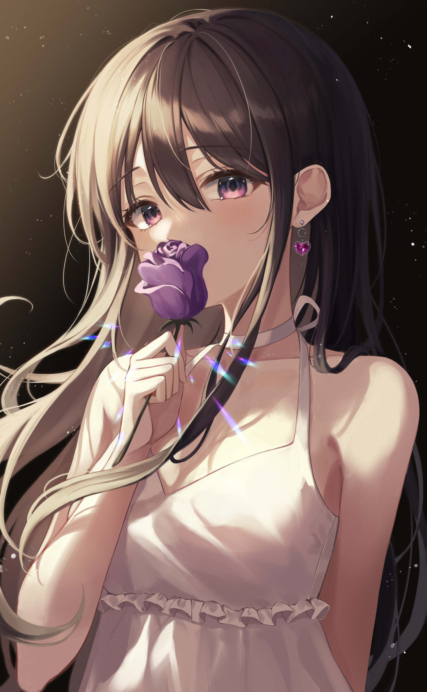

关于作者

座右铭:
- keep learning
- keep writing
- keep coding
爱好:听歌 运动 打游戏
性格:乐观 个性 喜欢钻研
家乡:江苏苏州
专业:计算机科学与技术
随笔摘抄
一、岁月从来不曾静好，只是有人在替你背负枷锁，含泪前行。也许是父母，也许是朋友，也许是陌生人……无论是谁，请记得常怀感恩之心。
二、这个世界并不完美，甚至有点残酷。你无法决定下一段旅途遇见的是好事还是坏事，可你能决定面对它们的态度。你看这个世界的角度，决定了这个世界给你的温度。
三、总会有一件事让你瞬间长大，也总会有一个人让你泪如雨下。愿你早日领教这个世界的深深恶意，让自己活得开心得意。
四、想要与众不同，却总随遇而安，想要做很多未做的事，却在现实棘手的吃喝拉撒前低下了头，我们间歇性热血满腔，长时间迷茫犯懒，别等了，再努力试试看！
